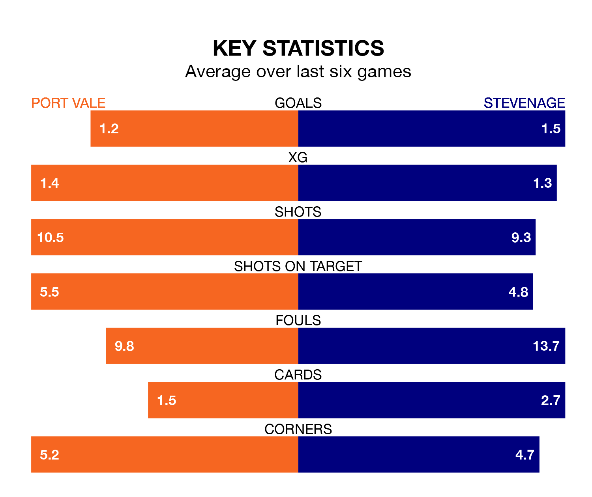

Port Vale welcome Stevenage to Vale Park on Saturday looking to pick up points to end their three-game losing streak.
Vale's struggles have left them with just four points from their last six EFL League One matches, while their opponents have earned 12 from a possible 18.
In Jamie Reid, Stevenage have one of the league's most on-form strikers so far this season. He has notched 16 goals in 28 appearances, to sit second in the scoring charts.
His goal rate of one every 140 minutes is quicker than that of Ben Garrity, Vale's top scorer with a goal every 208 minutes, and a total of nine goals in 23 games.
In the last 10 years, Vale and Stevenage have played each other on 15 occasions. They won three each, and they drew nine times.
On average, the Valiants scored 1.0 goal and the Boro 1.1 in those matches.
Their last meeting was on December 12, when they played out a 3-3 draw.
The Valiants are 21st in the table after 28 games, of which they have won eight and drawn six, earning 30 points.
The Boro are 15 places ahead of the hosts in sixth, with 15 wins and seven draws putting them on 52 points.
With 28 goals in 28 games so far this season, Vale are scoring at below the league average rate with 1.0 goals per game. And they are conceding more than average, letting in 43 goals at a rate of 1.5 per game.
The away side, meanwhile, are above average scorers, with 1.4 goals per game, compared to a league average of 1.3. They have conceded 1.0 goal per game.
Vale's last match was on Tuesday, a 1-0 loss against Leyton Orient.
Stevenage lost 1-0 against Reading last time out, also on Tuesday.
Updated: 11:43 (UTC), 08/02/24